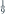
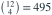

8 部不同汽车随机停在一排 12 个位置，所有不重复占位方式等可能。4 个空位置恰好相连的概率为？
- A

- B
- C
- D
我已思考，展开答案与解析
正确答案：B
- 每种 4 个空位的子集具有相同概率，总数为

。 - 连续 4 空位的起点可以是第 1 至第 9 位，共 9 种，概率为 。
易错提醒车辆的排列在分子分母中共同抵消，直接数空位子集最方便。
JYSG · 432精选 · 册内复旦大学432·2024年·一；PDF第40页（印刷页38）
原大题拆解